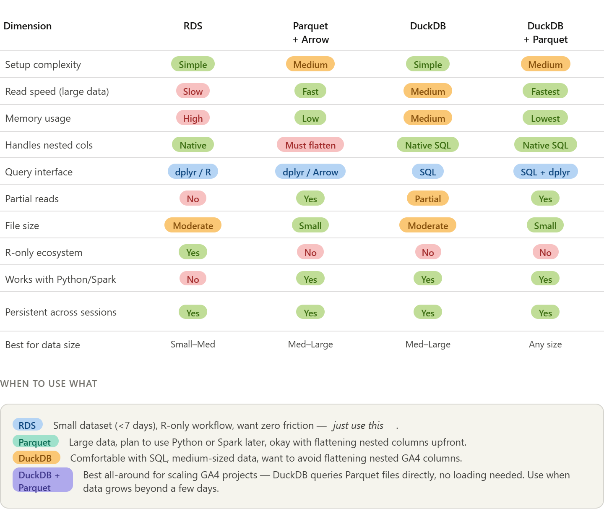
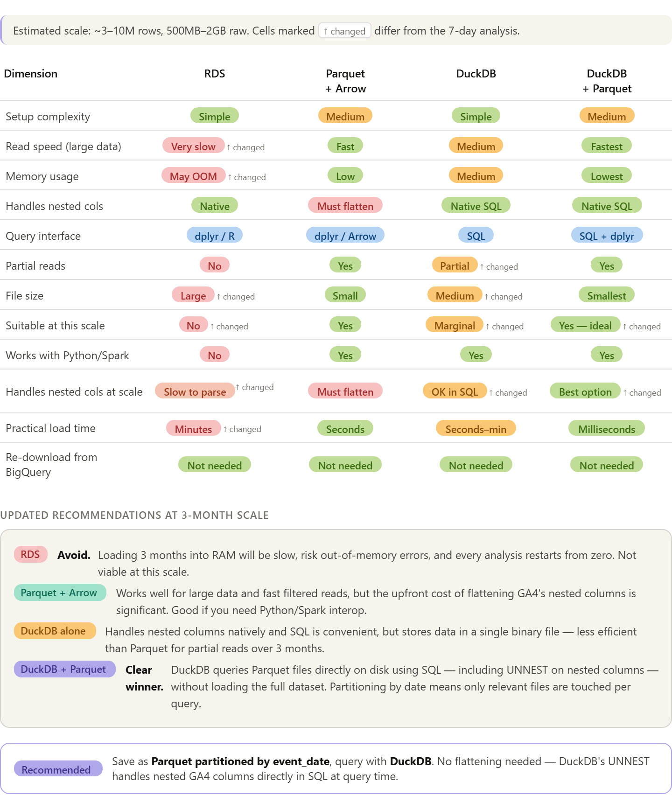

Guideline for Working with GA4 Data in R
File Sizes & Comparisons of Methods
1 Comparisoon of Various Methods
1.1 Small GA4 Project (< 7 days)
For your current 7-day project, RDS alone is enough. As you scale up or start wanting SQL-style queries, DuckDB + Parquet is the most powerful pairing — DuckDB queries the Parquet files directly without even needing to load them first.

1.1.1 A few things worth highlighting from the table:
The nested column problem is the deciding factor for GA4 specifically. RDS and DuckDB both handle event_params, device, and geo as-is, while raw Parquet forces you to flatten them first (which is where all that purrr complexity came from).
DuckDB + Parquet is the best long-term investment because DuckDB can query Parquet files on disk directly with a single line — duckdb::duckdb_read_csv() or FROM read_parquet('data/*.parquet') — meaning you get the storage efficiency of Parquet without writing Arrow query pipelines.
For your current 7-day project, RDS wins on simplicity. But if you plan to scale to months of GA4 data, switching to DuckDB early costs very little effort and will save you a lot of pain later.
1.2 Large GA4 Data (90 days)

1.2.1 The three key shifts from the 7-day analysis are:
RDS is now off the table. At 3 months, you’re likely looking at 3–10M rows and 500MB–2GB of raw data. Loading that entirely into RAM on every session is slow, risks crashing R with an out-of-memory error, and gives you no ability to query just a slice of the data.
DuckDB alone becomes marginal. A .duckdb file is a single binary blob — you can’t selectively read January without touching February and March. It’s fine for medium data but loses its edge at this scale.
DuckDB + Parquet is the clear winner, and the setup is simpler than it sounds. You save once as date-partitioned Parquet files, then DuckDB reads them directly on disk:
```{r}
library(duckdb)
con <- dbConnect(duckdb())
# DuckDB reads Parquet files directly — no loading into R first
dbGetQuery(con, "
SELECT
event_date,
event_name,
ep.value.string_value AS page_location
FROM read_parquet('data/ga4_parquet/**/*.parquet', hive_partitioning = true)
CROSS JOIN UNNEST(event_params) AS ep(key, value)
WHERE event_date BETWEEN '20210101' AND '20210131'
AND ep.key = 'page_location'
")
```2 Recommended Workflow for Large GA4 Data
- Will use DuckDB + Parquet
2.1 Step 1: Install packages
```{r}
install.packages(c("bigrquery", "duckdb", "arrow", "dplyr"))
```2.2 Step 2: Download from BigQuery once, save as partitioned Parquet
Do this once only. All future analysis reads from local Parquet files.
```{r}
library(bigrquery)
library(arrow)
library(dplyr)
billing_project <- "your-project-id"
# Download in monthly chunks to avoid memory pressure
months <- list(
c("20210101", "20210131"),
c("20210201", "20210228"),
c("20210301", "20210331")
)
dir.create("data/ga4_parquet", recursive = TRUE, showWarnings = FALSE)
for (m in months) {
message("Downloading ", m[1], " to ", m[2], "...")
result <- bq_project_query(billing_project, glue::glue("
SELECT
event_date, event_timestamp, event_name,
event_params, user_pseudo_id,
device, geo, traffic_source, ecommerce, items
FROM `bigquery-public-data.ga4_obfuscated_sample_ecommerce.events_*`
WHERE _TABLE_SUFFIX BETWEEN '{m[1]}' AND '{m[2]}'
"))
chunk <- bq_table_download(result, bigint = "numeric", page_size = 1000)
# Write directly to partitioned Parquet — Arrow infers event_date partition
chunk |>
group_by(event_date) |>
write_dataset("data/ga4_parquet", format = "parquet")
rm(chunk); gc() # free memory between chunks
}
```- Your folder structure will look like:
data/ga4_parquet/
event_date=20210101/part-0.parquet
event_date=20210102/part-0.parquet
...2.3 Step 3: Connect DuckDB to the Parquet files
At the start of every future session, just run this — no re-downloading, no loading into RAM:
```{r}
library(duckdb)
library(DBI)
con <- dbConnect(duckdb())
# Register the entire partitioned dataset as a virtual table
dbExecute(con, "
CREATE VIEW ga4 AS
SELECT * FROM read_parquet(
'data/ga4_parquet/**/*.parquet',
hive_partitioning = true
)
")
```From here, ga4 behaves like a database table. DuckDB reads only the Parquet partitions your query needs.
2.4 Step 4: Query as needed
Flat columns — standard SQL:
```{r}
# Only touches January partitions on disk
dbGetQuery(con, "
SELECT event_date, event_name, COUNT(*) AS n
FROM ga4
WHERE event_date BETWEEN '20210101' AND '20210131'
GROUP BY 1, 2
ORDER BY 3 DESC
")
```Nested columns — use UNNEST in SQL:
```{r}
# Extract page_location from event_params without any upfront flattening
dbGetQuery(con, "
SELECT
event_date,
user_pseudo_id,
ep.value.string_value AS page_location
FROM ga4
CROSS JOIN UNNEST(event_params) AS ep(key, value)
WHERE event_name = 'page_view'
AND ep.key = 'page_location'
AND event_date BETWEEN '20210101' AND '20210131'
")
```Device and geo nested fields:
```{r}
dbGetQuery(con, "
SELECT
device.category AS device_type,
device.operating_system AS os,
geo.country,
geo.city,
COUNT(DISTINCT user_pseudo_id) AS users
FROM ga4
WHERE event_date BETWEEN '20210101' AND '20210331'
GROUP BY 1, 2, 3, 4
ORDER BY 5 DESC
")
```Purchase funnel — joining unnested params:
```{r}
dbGetQuery(con, "
SELECT
event_name,
COUNT(DISTINCT user_pseudo_id) AS users,
COUNT(*) AS events
FROM ga4
WHERE event_name IN ('session_start','view_item','add_to_cart','purchase')
AND event_date BETWEEN '20210101' AND '20210331'
GROUP BY 1
ORDER BY 3 DESC
")
```2.5 Step 5: Close the connection when done
```{r}
dbDisconnect(con)
```